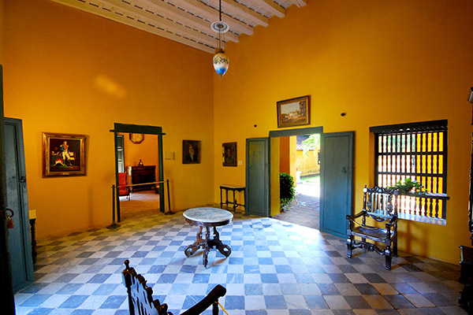
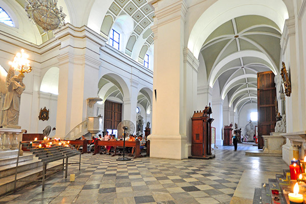
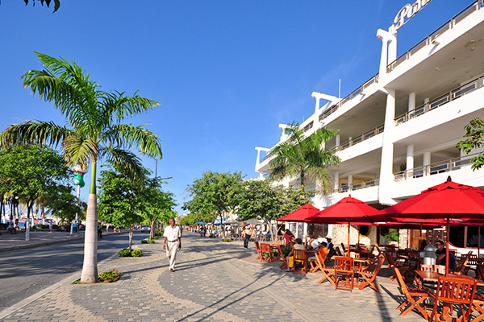
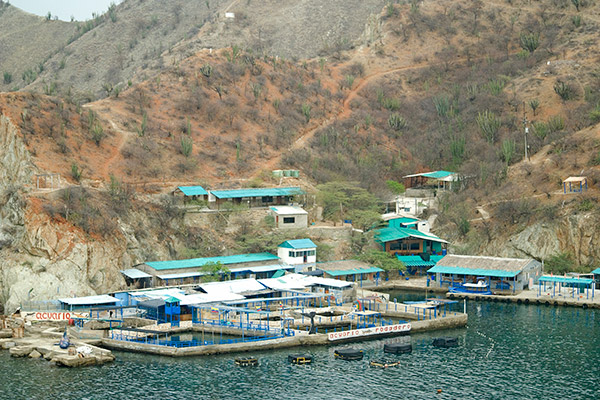

<ons-page>
    <ons-navigator title="Navigator" var="myNavigator">

        <ons-toolbar modifier="opacity">
            <div class="left">
                <ons-toolbar-button ng-click="menu.toggle()"><ons-icon icon="ion-navicon-round" fixed-width="false"></ons-icon></ons-toolbar-button>
            </div>
            <div class="center">Santa Marta</div>
        </ons-toolbar>
        <!-- Start cssSlider.com -->
        <div class='csslider1 autoplay '>
            <input name="cs_anchor1" id='cs_slide1_0' type="radio" class='cs_anchor slide' >
            <input name="cs_anchor1" id='cs_slide1_1' type="radio" class='cs_anchor slide' >
            <input name="cs_anchor1" id='cs_slide1_2' type="radio" class='cs_anchor slide' >
            <input name="cs_anchor1" id='cs_play1' type="radio" class='cs_anchor' checked>
            <input name="cs_anchor1" id='cs_pause1' type="radio" class='cs_anchor' >
            <ul>
                <div style="width: 100%; visibility: hidden; font-size: 0px; line-height: 0;">
                    
                </div>
                <li class='num0 img'>
                    
                </li>
                <li class='num1 img'>
                    
                </li>
                <li class='num2 img'>
                    
                </li>

            </ul>


            <div class='cs_arrowprev'>
                <label class='num0' for='cs_slide1_0'></label>
                <label class='num1' for='cs_slide1_1'></label>
                <label class='num2' for='cs_slide1_2'></label>
            </div>
            <div class='cs_arrownext'>
                <label class='num0' for='cs_slide1_0'></label>
                <label class='num1' for='cs_slide1_1'></label>
                <label class='num2' for='cs_slide1_2'></label>
            </div>


        </div>
        <!-- End cssSlider.com -->

        <div class="item-tittle-padding">Sitios de Interes</div>

        <ons-list>

            <ons-list-item modifier="chevron" onclick="myNavigator.pushPage('centro_historico.html', { animation : 'slide' } )">
                Centro Histórico
            </ons-list-item>
        </ons-list>
        <ons-list>
            <ons-list-item modifier="chevron" onclick="myNavigator.pushPage('balneario_rodadero.html', { animation : 'slide' } )">
                Balneareo del Rodadero
            </ons-list-item>
        </ons-list>
        <ons-list>
            <ons-list-item modifier="chevron" onclick="myNavigator.pushPage('acuario_museo_del_mar.html', { animation : 'slide' } )">
                Acuario y Museo del Mar del Rodadero
            </ons-list-item>
        </ons-list>
        <ons-list>
            <ons-list-item modifier="chevron" onclick="myNavigator.pushPage('mundo_marino.html', { animation : 'slide' } )">
                Mundo Marino Acuario
            </ons-list-item>
        </ons-list>
        <ons-list>
            <ons-list-item modifier="chevron" onclick="myNavigator.pushPage('playa_blanca.html', { animation : 'slide' } )">
                Playa Blanca
            </ons-list-item>
        </ons-list>
        <ons-list>
            <ons-list-item modifier="chevron" onclick="myNavigator.pushPage('bello_horizonte-pozos_colorados.html', { animation : 'slide' } )">
                Bello Horizonte - Pozos Corolados
            </ons-list-item>
        </ons-list>
        <ons-list>
            <ons-list-item modifier="chevron" onclick="myNavigator.pushPage('sierra_nevada.html', { animation : 'slide' } )">
                Parque Nacional Natural Sierra Nevada de Santa Marta
            </ons-list-item>
        </ons-list>
        <ons-list>
            <ons-list-item modifier="chevron" onclick="myNavigator.pushPage('parque_tayrona.html', { animation : 'slide' } )">
                Parque Nacional Natural Tayrona
            </ons-list-item>
        </ons-list>
        <ons-list>
            <ons-list-item modifier="chevron" onclick="myNavigator.pushPage('quinta_san_pedro.html', { animation : 'slide' } )">
                Quinta de San Pedro Alejandrino
            </ons-list-item>
        </ons-list>
        <ons-list>
            <ons-list-item modifier="chevron" onclick="myNavigator.pushPage('taganga.html', { animation : 'slide' } )">
                Taganga
            </ons-list-item>
        </ons-list>
        <ons-list>
            <ons-list-item modifier="chevron" onclick="myNavigator.pushPage('taironaka.html', { animation : 'slide' } )">
                Taironaka
            </ons-list-item>
        </ons-list>
        <ons-list>
            <ons-list-item modifier="chevron" onclick="myNavigator.pushPage('mamancana.html', { animation : 'slide' } )">
                Reserva Natural Mamancana
            </ons-list-item>
        </ons-list>
        <ons-list>
            <ons-list-item modifier="chevron" onclick="myNavigator.pushPage('minca.html', { animation : 'slide' } )">
                Minca
            </ons-list-item>
        </ons-list>
    </ons-navigator>
</ons-page>